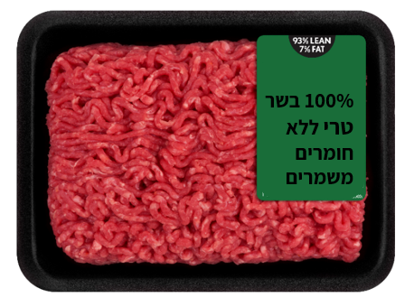
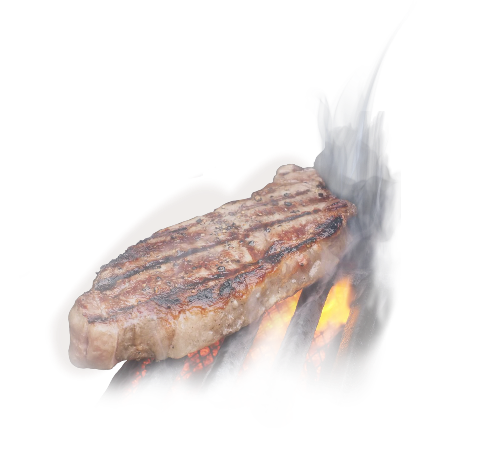

איך לבחור בשר נכון
לפני שמדברים על הכנת בשר, צריך לוודא שקונים בשר איכותי ואם התלבטתם בין בשר קפוא לבין בשר טרי, תדעו שבשר טרי, איכותי וטעים יותר!
אז הכנו לכם כמה טיפים, ככה בדוק תדעו לבחור נכון!
טרי טרי אדום ואיכותי
- נתח בעל צבע אדום כהה עד סגלגל, עם ניחוח מתקתק
- שומן לבן בוהק ולא צהבהב
- נתח "משויש" – השומן מפוזר על הנתח ולא מרוכז במקום אחד
לא מבריק? לא קונה!
- שלוליות מים מסביב לנתח מעידות על בשר מוזרק או מופשר
- בשר מבריק מעיד על בשר טרי, איכותי וללא חומרים וכימיקלים
- שקע בנגיעה על הנתח יעיד על בשר מופשר
בתיבול? רק הטאצ' שלי!
- קנו בשר ללא תיבול, את התיבול תעשו בבית
- העדיפו בשר טחון הנטחן במקום


חייבים קפוא? בדקו את המרכיבים!
- בבחירת בשר קפוא, העדיפו מותג איכותי ובחנו את המרכיבים
- התרחקו ממילים כמו מוסף, מים, חלבון מן הצומח או מעובד
- בשר קפוא עם תוקף ארוך במיוחד מחשיד


קפוא על הגריל? בחיים לא!!
- הפשירו את הבשר היטב, כשהבשר קפוא קשה לצלות אותו מבחוץ וגם מבפנים
- הפשרה הדרגתית ולא במיקרוגל! מומלץ להפשיר את הבשר במקרר יום קודם
אצלי רק פריים
-
Select – אחוז השומן הנמוך ביותר
-
Choice – אחוז השיוש בינוני
-
Prime – אחוז השיוש הגבוה ביותר
ככה תדעו שבחרתם נכון
- הבשר מבריק
- צבע אדום עד סגלגל
- שומן לבן בוהק
ועכשיו אחרי שבחרתם בשר איכותי, בואו לבדוק מהי